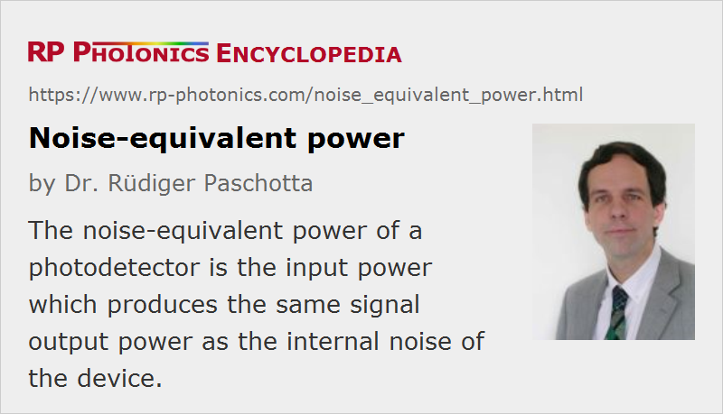

Noise-equivalent Power
Acronym: NEP
Definition: the input power to a detector which produces the same signal output power as the internal noise of the device
German: äquivalente Rauscheingangsleistung
Categories: light detection and characterization, fluctuations and noise
Units: W or W / Hz1/2
How to cite the article; suggest additional literature
Author: Dr. Rüdiger Paschotta
When a photodetector does not get any input light, it nevertheless produces some noise output with a certain average power, which is proportional to the square of the r.m.s. voltage or current amplitude. The noise-equivalent power (NEP) of the device is the optical input power which produces an additional output power identical to that noise power for a given bandwidth (see below). If the input is interpreted as a signal, the output signal and noise powers are then identical, i.e., the signal-to-noise ratio would be 1.
The noise power and thus also the noise-equivalent power depends on the assumed bandwidth. (For white noise, it is proportional to that bandwidth.) At a first glance, one may find it most natural to use the full detection bandwidth of the device. Then, however, the NEP would not allow a fair comparison of detectors with different bandwidth; it would be reduced if additional electronic filtering, reducing the detection bandwidth, would be applied. Therefore, it is common to assume a bandwidth of 1 Hz, which is usually far below the detection bandwidth.
Some authors specify the NEP in units of W / Hz1/2 rather than W (watts), as would be the usual units for a power. Effectively, they base the NEP on a power spectral density (PSD) rather than on a power. The numerical results are not changed, as the power in a 1-Hz bandwidth arises from multiplying the PSD with the bandwidth of 1 Hz.
The inverse of the noise-equivalent power is called the detectivity.
Obviously, a low noise-equivalent power is desirable, because that power level is about the minimum input power level which can be detected easily when averaging the signal over a time of the order of one second. Using advanced methods such as lock-in detection, one can actually detect much weaker signals, provided that these have a bandwidth far below the detection bandwidth. In effect, one restricts the detection bandwidth to a value far below 1 Hz, which also reduces the noise power with which the signal has to compete. The required averaging time is correspondingly longer.
The possible signal-to-noise ratio of a measurement (for a 1-Hz bandwidth) can be estimated simply as the available input power divided by the noise-equivalent power. For that purpose, one does not need to know the detector's responsivity.
If the responsivity of a photodetector (e.g. a photodiode) can be increased without increasing the delivered noise power, the noise-equivalent power can be reduced. However, by using an avalanche photodiode, for example, where the responsivity can be greatly enhanced due to an internal amplification mechanism, one also obtains substantially more noise, so that the noise-equivalent power may even be increased.
Note that the noise-equivalent power depends on the optical wavelength, since that influences the responsivity of the detector. The lowest NEP is achieved for those wavelengths where the responsivity is the highest.
Questions and Comments from Users
Here you can submit questions and comments. As far as they get accepted by the author, they will appear above this paragraph together with the author’s answer. The author will decide on acceptance based on certain criteria. Essentially, the issue must be of sufficiently broad interest.
Please do not enter personal data here; we would otherwise delete it soon. (See also our privacy declaration.) If you wish to receive personal feedback or consultancy from the author, please contact him e.g. via e-mail.
By submitting the information, you give your consent to the potential publication of your inputs on our website according to our rules. (If you later retract your consent, we will delete those inputs.) As your inputs are first reviewed by the author, they may be published with some delay.
See also: photodetectors, signal-to-noise ratio, detectivity, responsivity
and other articles in the categories light detection and characterization, fluctuations and noise
|  |
If you like this page, please share the link with your friends and colleagues, e.g. via social media:
These sharing buttons are implemented in a privacy-friendly way!